Apps & Games
Aether Architect
A third-person adventure for Android, built in Unreal Engine 5.8. You cross a scatter of floating islands collecting purple crystals, and the crystals open the way — a stone ring at the centre of the map that is not there yet when you arrive.
Overview
Aether Architect is the project I learned Unreal on. It is a first mobile game rather than a finished product — the build is playable, the world is real, and the systems underneath are the point. Everything in it is assembled in-engine: the islands, the crystal pickups, the gate, the HUD and the character locomotion.
The design rests on one loop. Crystals are scattered across islands you cannot walk between, so each pickup has to be visible from a distance and reachable by a route you can read. The gate at the centre stays inert until enough of them are collected — which is why the HUD counts crystals separately from health, and why the two item bars sit next to it.
Intro cinematic
The opening of the game — the title sequence that runs before the first level loads.
Gameplay capture
Recorded straight out of the editor viewport, so what you see is the running game — no trailer edit, no capture rig.
Animation process
The player character's animation work, sped up 4× — posing, the sequencer passes and the iteration, without the real-time waiting.
What's in the build
- Two levels — Lvl_Intro for the opening beat and Lvl_Game as the playable island field, set as the default map.
- A crystal system — its own meshes, materials, particles and blueprint, so a pickup is one asset rather than a hand-placed prop.
- Motion matching locomotion — PoseSearch, MotionTrajectory, Chooser and the Animation Locomotion Library drive the character instead of a hand-built blend tree.
- Motion warping — traversal actions snap to their targets instead of sliding through them.
- LiveLink Control Rig — the rig is set up for live capture, which is how the character animation was authored.
- Gameplay StateTree — behaviour is written as state trees rather than a tangle of blueprint branches.
- Android target — the only platform in the project file, with a packaged build under
Build/.
Notes
I wrote up what motion matching actually costs on a phone target while building this — what the four PoseSearch assets do, where the cost lands, and what I would change next time.
Gallery
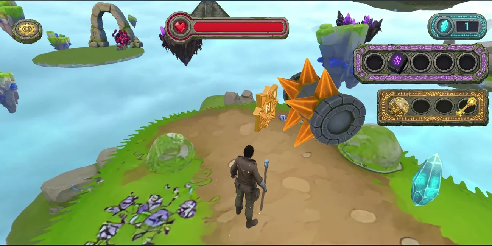
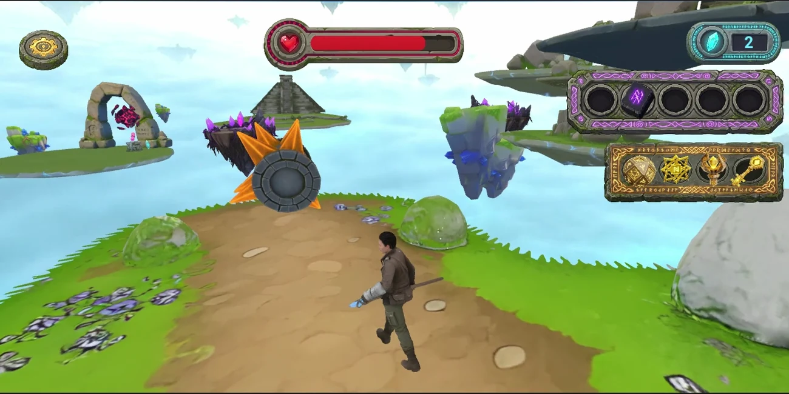
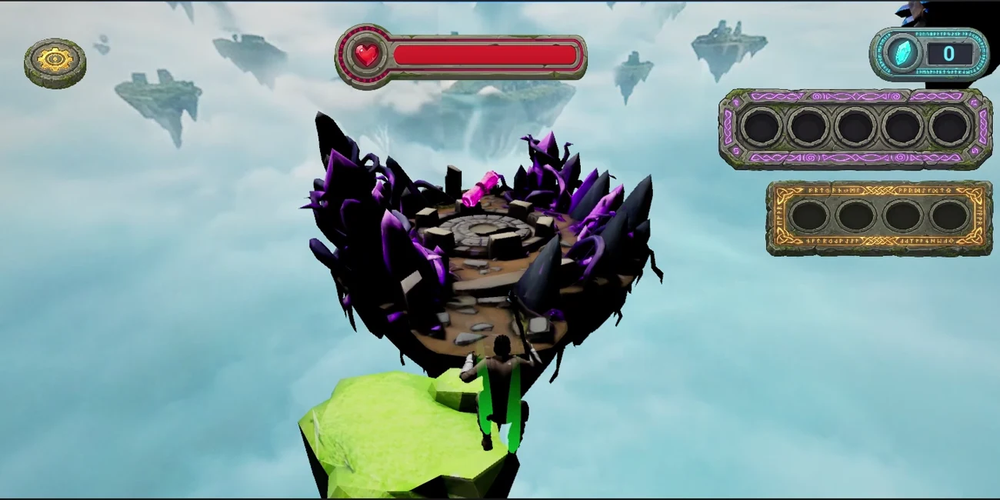
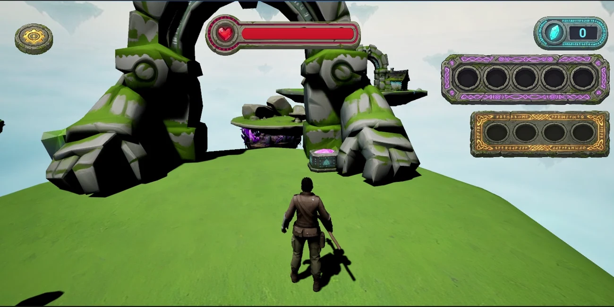
Process frames
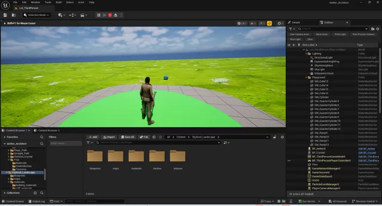
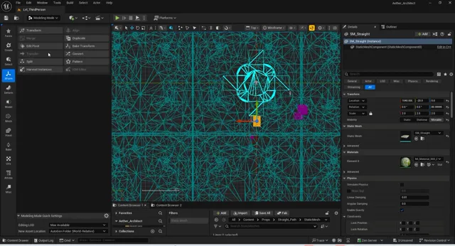
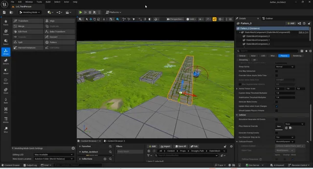
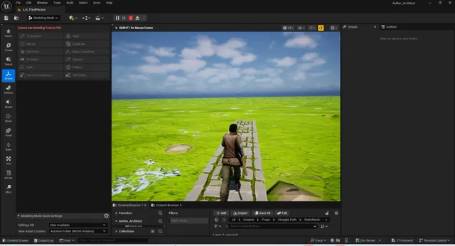
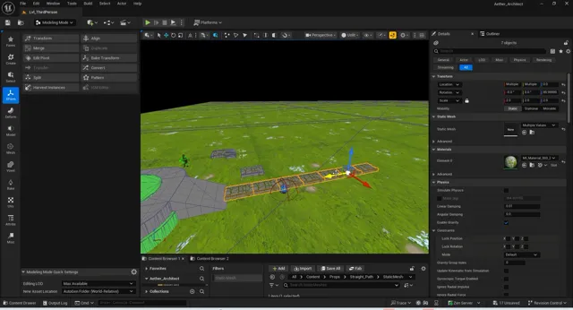
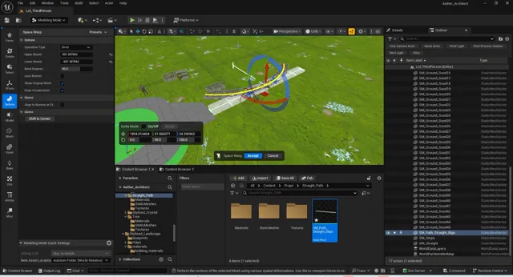
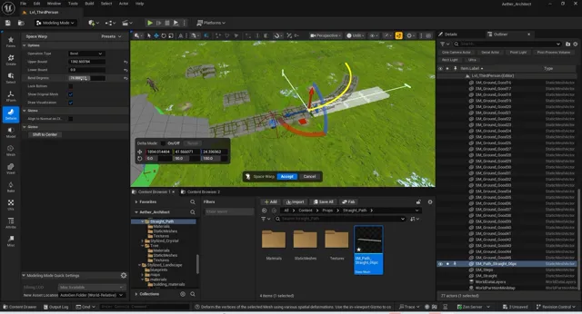
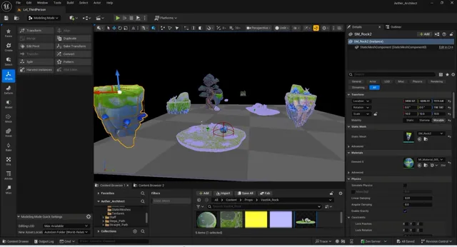
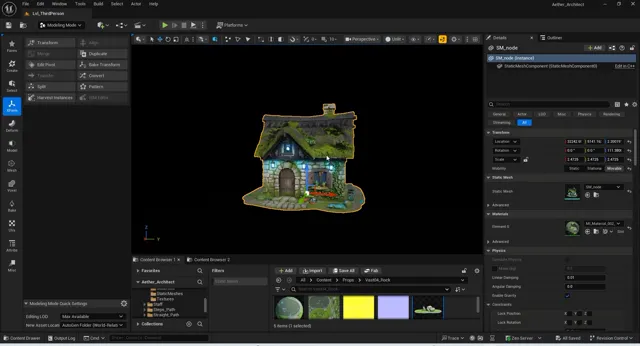
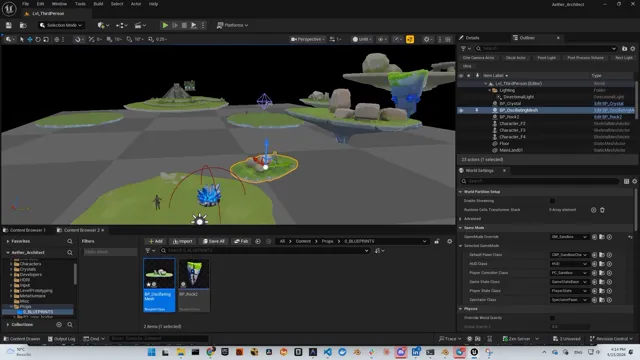
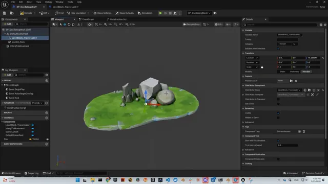
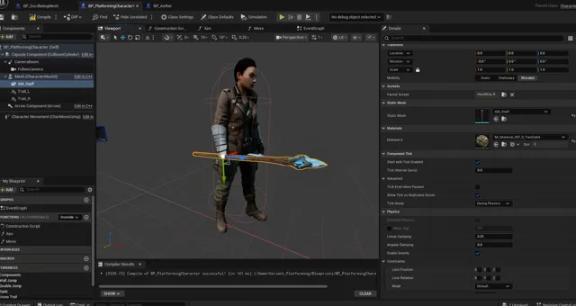
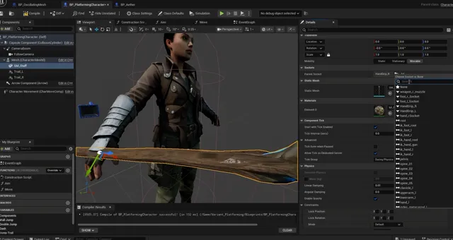
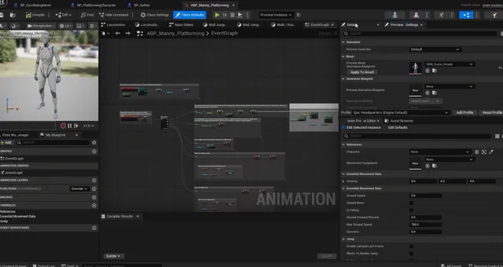
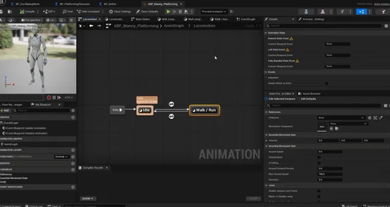
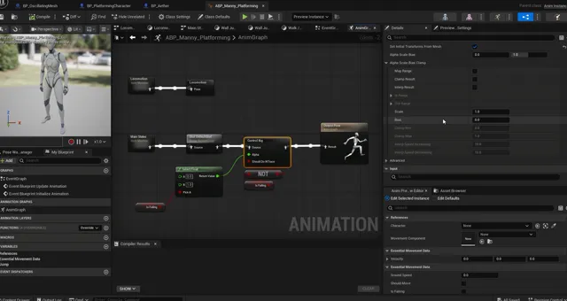
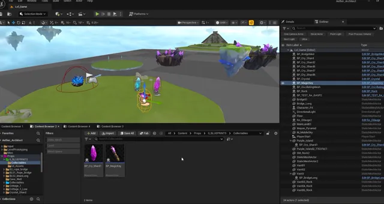
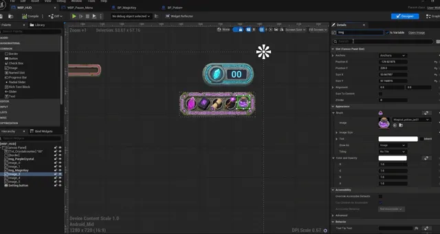
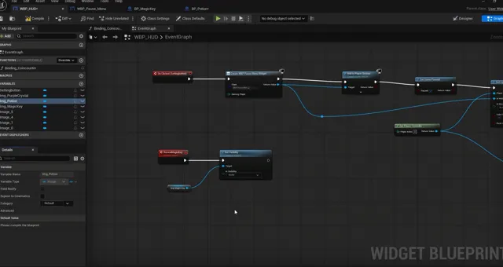
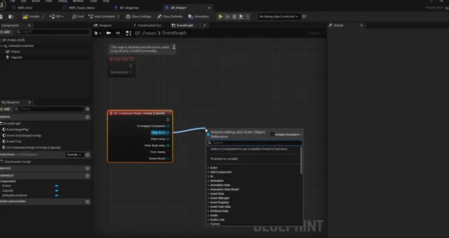
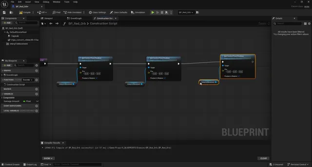
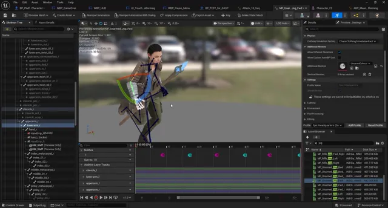
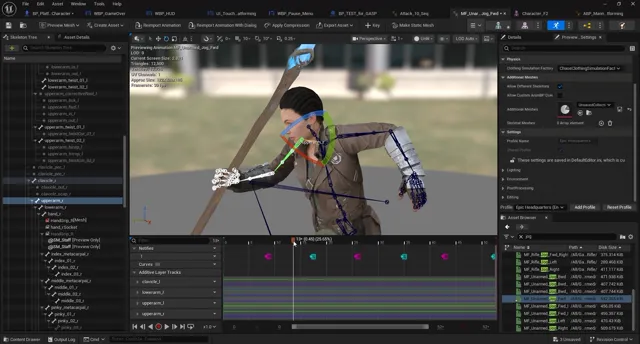
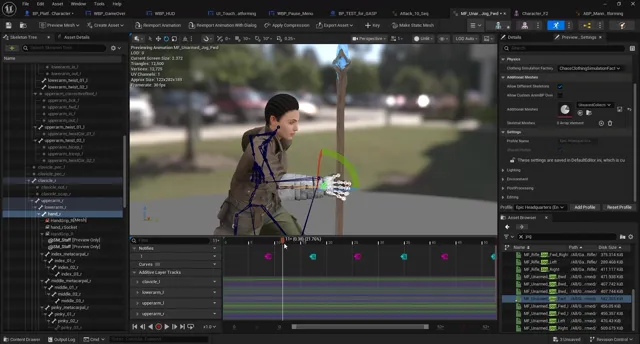
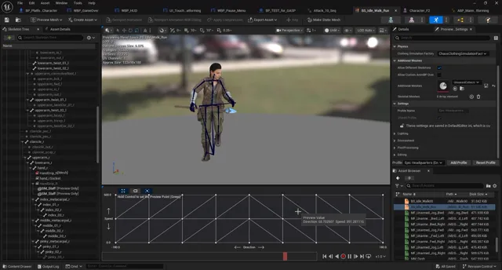
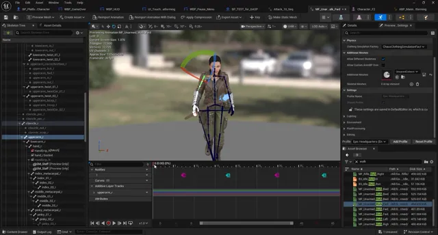
Under the hood
At a glance
| Type | Third-person adventure |
|---|---|
| Engine | Unreal Engine 5.8 |
| Platform | Android — the only target in the project |
| Loop | Collect crystals across floating islands, open the gate |
| Locomotion | Motion matching + motion warping |
| Status | Playable prototype — in development |